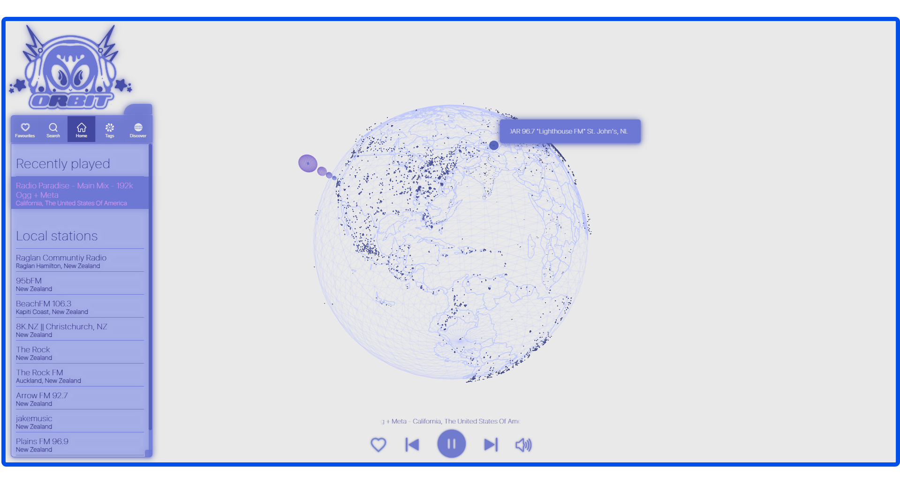

ORBITRAD.IO
2025/PERSONAL/SOLO PROJECT

OrbitRadio is a fully deployed web app for discovering and streaming live radio stations via an interactive 3D globe and custom interface.
Built with Three.js on the front end and a Node.js + Express backend, it has multiple features including a search, tag-based filtering, a favouriting system, and smooth globe navigation for an immersive, music-driven exploration of the world.
Check out version 1.0 here